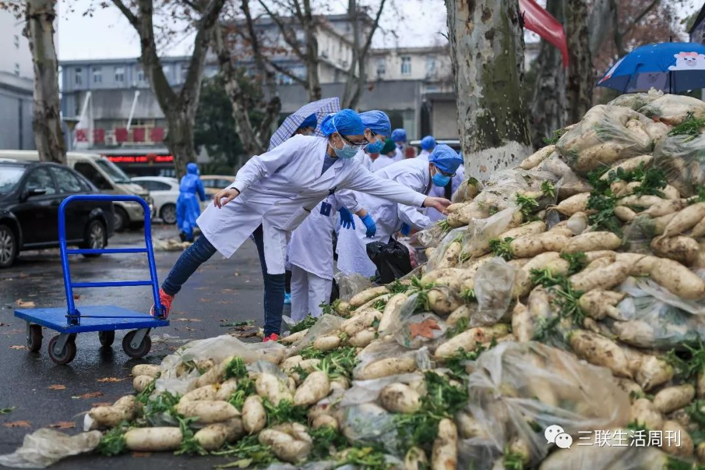
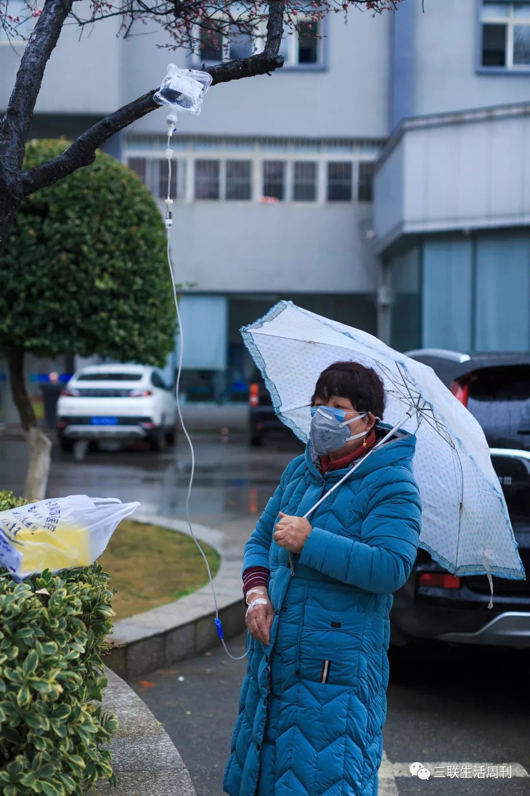
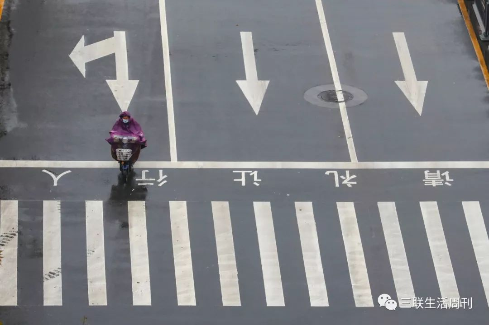
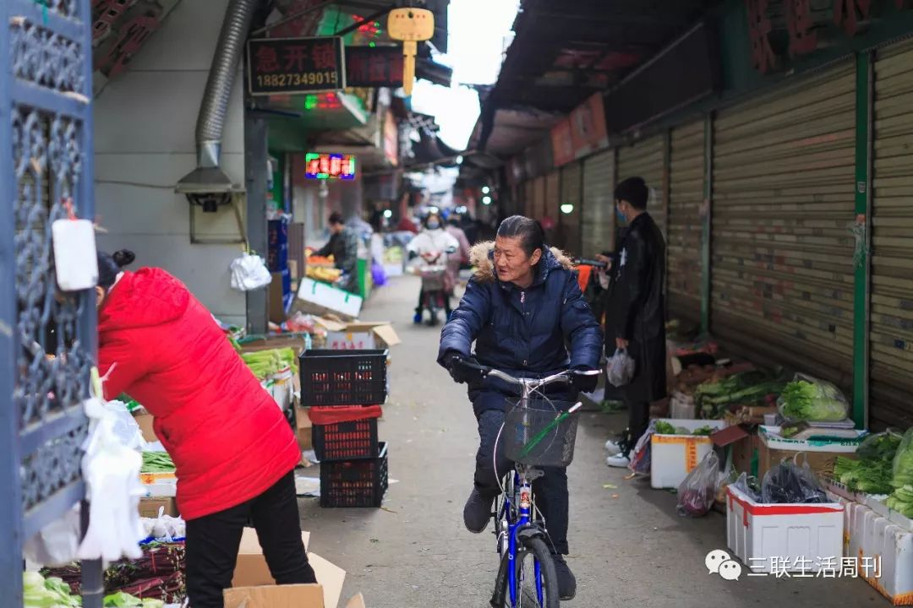
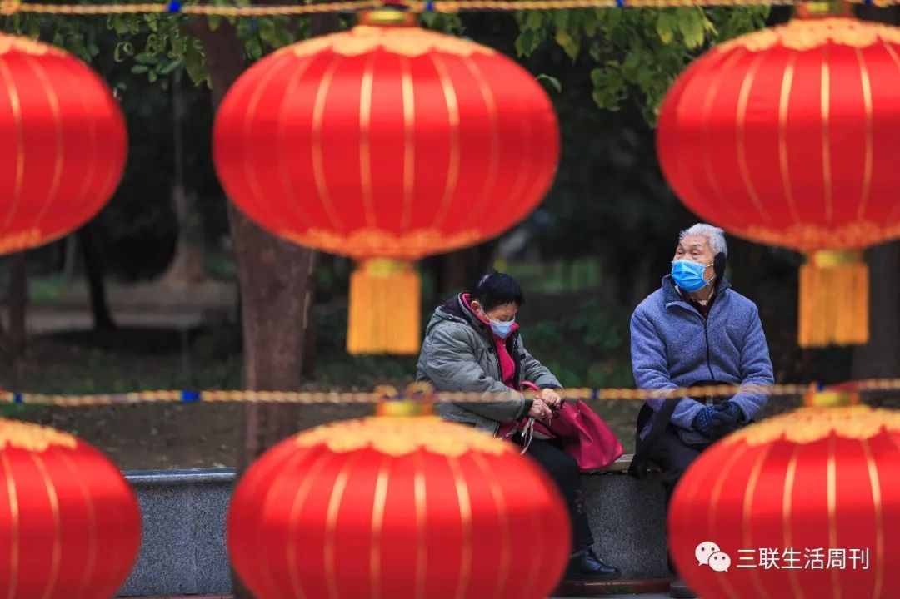

武汉2月10日起小区实行封闭式管理 仍有少量确诊病人等待入院
原文链接 备份链接 【财新网】（记者 萧辉 包志明）今日（2月11日）凌晨1点，武汉市新冠肺炎疫情防控指挥部发出第12号通告，决定从2月10日起武汉全市范围内所有住宅小区实行封闭式管理，并要求对新冠肺炎确诊患者或疑似患者所在楼栋单元必须 …
社区曾经拥有的强大社会动员能力，在那些个人命运里，无足轻重。
记者 | 王海燕 (发自武汉)
原标题：
个人与社区，疫情爆发后的百步亭
本文选自新冠特刊「武汉现场」

一名中风患者的就医困境

2月7日傍晚，我是在湖北省中医院的停车场里见到李高秋的。听到我的电话后，他从小轿车里钻出来，手里拿着一个小小的喷雾瓶，一边站直，一边往身上从上到下喷了一通，稀薄的酒精味道随即飘过来。我朝他走过去，离他大约1.5米左右，再往前，他立刻踮着脚尖开始往后退，是下意识的警觉。我赶紧停下，懊恼地意识到，自己又忘了，此刻身处武汉，应该遵循远离他人的防疫原则。
天气阴沉沉的，停车场出乎意料地冷清，几乎没有患者，只有穿着白大褂的医护人员来来回回，运送着一板车一板车的白萝卜。李高秋跟我说话时，羽绒服的帽子紧紧扣在头上，既像是要抵御寒冷，也像是要抵御病毒。他的头发很乱，眼睛也是肿的，加上瘦，又弓着腰，看起来疲惫已极。

汉阳医院里，医务人员正在运送萝卜。（黄宇 摄）
李高秋已经在大街上飘荡三天了，他是带着岳父出来看病的，但无法入院。我们说话时，老人不断敲打着车窗玻璃，李高秋拉开车门给我看，首先映入眼帘的，是胡乱堆在轿车后座的暖水瓶、衣服、枕头和日常用品，然后才看到他岳父，50多岁的人，缩在狭小的座位上，嘴巴微微张着，茫然地看着我们。李高秋也不知道他要表达什么，2月4日上午，老人突然脸歪了，手也抬不起来，是中风的迹象。
李高秋是武汉市江岸区百步亭花园社区立春园的居民，岳父中风时，跟女儿（李高秋的妻子）田欣住在一起。田欣本来准备自己带父亲去看病的，老人当时还能走路、说话，他不愿意去医院，因为怕感染上新冠肺炎。田欣想得简单，不管感不感染，一定得去医院。她知道，脑中风是有黄金治疗时间的，必须在3到6小时内送医，否则致残率、致死率将成倍提高。10多年前，老人中过一次风，治疗及时，很快就痊愈了，如今跟同龄人一样，还能出门旅游、徒步，抱抱小孩。
田欣不会开车，所以李高秋劝她，还是自己带岳父去看病吧。从家里出发时，除了带上口罩、衣服、一次性手套等东西，他还带上了电脑和几本书，准备给老人陪床时用来打发时间。
离李高秋家最近的是汉口医院，但汉口医院是新冠肺炎定点医院，人多，感染风险大，李高秋最后带着岳父去了省中医院。在那里，医生给老人拍了颅部CT，结果显示“脑梗塞、脑萎缩”，的确是中风了。但李高秋没想到的是，肺部CT还显示，老人“右上肺感染性病变”，医生无法下结论，“建议结合其他相关检查综合考虑”。医生给老人开了一点降压药后，建议李高秋去给岳父做个新冠肺炎的病毒核酸检测，排除新冠肺炎，才能正常收治。

湖北省中医院停车场内，李高秋正在打求助电话。（黄宇 摄）
田欣立刻在家里给社区打了电话，询问怎么办。按照武汉市1月24日的规定，跟新冠肺炎相关的治疗，需要上报社区，再由社区统一安排，分级诊疗。田欣当时对这一规定并不清楚，她只知道，如今从出行到看病，一切正常的社会功能都发生了变化，她本能地向社区求助，但社区建议她，自己去大医院排队做检测，效率更高。
李高秋知道后，立刻带着岳父去了武汉协和医院。他运气好，去医院的时间是半夜，虽然不能检测，但从值班护士处拿到了排队的号牌，第二天早上7∶40，李高秋再次去医院排队，上午9∶00带着岳父顺利完成了采样。李高秋那时还没意识到，这将成为岳父求诊过程中最顺利的时刻，他再难拥有这样的好运气。
新冠肺炎病毒核酸检测结果出来前，李高秋又带着岳父去了离家最近的长航医院和汉口医院，都无法收治。在此期间，他眼睁睁看着岳父急转直下，手变得抖抖索索，无法拿稳一块小面包，完整的字词从他的喉咙里消失了，取而代之的是一些咿咿呀呀的无意义音符。田欣让李高秋拍点父亲的视频发过去，他始终没有照办。
在那两天里，李高秋甚至希望，医院可以开点药，自己来帮岳父打针、输液。他无法清楚地知道这样做能有什么效果，但无论他还是病人，都太需要“在治疗”的安慰了。

汉阳医院，无处可去的患者在路边打吊瓶。（黄宇 摄）
最终，2月7日上午，李高秋拿到了岳父的检测结果，显示“阴性”，意味着排除新冠肺炎感染。按照常理来说，这本是一个好结果，但当他把这个结果拿回省中医院时，医生认为，核酸检测的准确率不高，要求他岳父再次拍胸部CT，并根据两次结果判定，李高秋的岳父依然有感染新冠肺炎的可能，拒绝收治。医生的判断并非全无来由，2月5日，呼吸与危重症医学专家、中国医学科学院院长王辰接受媒体采访时也称，核酸对于真实病例的检测率不过30%至50%。
李高秋只能回到社区，准备进入分级诊疗的流程，但这时他才发现，核酸检测的好结果带来了坏消息，原因是社区只负责新冠肺炎的分级诊疗，且严格按照核酸检测标准上报，这意味着，社区最多只能为李高秋的岳父申请第二次核酸检测。但社区每天只能上报一个检测名额，在李高秋岳父的前面，还有一个需要透析的病人，同样在等待排除新冠肺炎，他们无法保证，什么时候能够排到李高秋的岳父。
更需要李高秋和妻子权衡的是，经由社区上报，老人如果确诊，就只能进入新冠肺炎定点医院；而如果老人无法确诊，他们将被彻底排除出分级诊疗流程，只能自己去寻找医院。这几乎是一个无解的死循环。
确定的疾病和不确定的感染
如果自我判断，李高秋和田欣都觉得，老人没有感染新冠肺炎。从1月22日封城开始，除了李高秋偶尔下楼丢垃圾外，这一家人就再也没有出过一次门。除了偶尔咳嗽，老人也没有出现发热、浑身酸痛、腹泻、呼吸困难等新冠肺炎典型症状。关于父亲肺部的感染，田欣倒是想到，老人平时每天能抽三包烟，肺部有其他感染和病变的可能。但这个理由既无法说服医生，也无法说服他们自己。
从李高秋和岳父走出家门那一刻起，新冠肺炎的阴影就和突然到来的中风纠缠在一起，莫名击倒了这一家人。田欣把她父亲房间里所有的衣服、床单、被套，全部扔进了洗衣机，水温调到了93℃。整所房子的地板、柜子、台面，田欣都用84消毒水擦了一遍，这本来是一家人自我隔离以来的日常习惯。而如今，田欣又增加了酒精喷洒环节。老人使用过的枕头、牙刷、毛巾，统统都被扔掉了。
我最后一次采访田欣时，距离老人离开家已经过去5天了，这也是国家卫生健康委专家组认为新冠病毒在体外可存活的最长时间，前提是温度、环境等各种条件适宜。田欣告诉我，直到那时，老人的房间始终保持开窗关门，无人踏进一步。田欣还让两个孩子和母亲每天至少洗手10次，居家戴口罩，甚至睡觉也不换下。她开始庆幸，父亲平时脾气暴躁，不爱跟孩子们在一起玩闹，总把自己关在房间里，与电脑作伴。
在无法得到有效救治的情况下，田欣的父亲最需要合理的休息和饮食，但被感染的忧虑，让李高秋和岳父不敢回家。李高秋本来打算带着岳父去黄陂区休息，那里有一栋房子，是老人平时居住的地方，但在进入黄陂区界时，两人的车被拦了下来。拦车的人看起来并不是交警，甚至看不出身份，只是连连让李高秋“回去！回去！”。

远征 摄
李高秋是个程序员，并不擅长跟人起冲突和纠缠，他几乎没问什么，就倒回了武汉的主城区。他唯一能想到的办法，是去社区开了一份接送患者的通行证明，但这没能帮助他回到黄陂区的房子里。后来他才了解到，连居委会的人去社区取物资，也被拦下来过好几次。
即便如此，“回家”也没有成为一个选项，甚至这个念头丝毫没有从他和田欣的脑海里闪起来过。在田欣看来，“就算他们出门前没有感染，去医院后，肯定也感染上了”。在新闻里，她看到太多这样的例子。田欣无法准确判断，只知道家里还有两个孩子，她一丁点风险也不想冒，很难再去计算不同行为的性价比。李高秋虽然尽力避免靠近各个医院的发热门诊区域，但他也赞同妻子的想法，岳父的肺部CT让他忧心忡忡，2月5日下午，他找亲戚借了辆面包车，和岳父在晚上分开睡。
为了洗漱方便，他尽力找靠近公厕的地方停车。为了减少和人打交道的次数，他和岳父两人都靠袋装小面包填肚子。因为缺少消毒用品和一次性手套，他在超市买了清洁用品，倒出里面的液体，洗干净后灌入了朋友送来的酒精；一次性手套则是用保鲜膜自制的。田欣说，李高秋以往在家里，每天早上，连衬衣和袜子都要她准备好，她没想到，他还会做这些。

2月8日，百步亭路边开放的菜场里，不时有居民出门买菜。随后，2月10日起，部分社区实行出行管制。（黄宇 摄）
流落街头的几天里，李高秋和家人互动了两次，一次是给妻子和孩子送了些口罩、消毒水和感冒药；另一次则是让他自己的父母送了两个灌满热水的暖水壶出来。两次交接中，他都没有和家人见面。
除了工作敲代码，李高秋平时少有社交生活，家里的大小事务几乎都由田欣处理。如今突然接下照顾岳父的重担，还要和家人隔绝，李高秋感到异常孤独和疲惫，岳父的核酸检测结果出来前，除了小范围求助，几乎没人知道李高秋家出事了，李高秋总觉得，事情应该能够解决。他是那种慢吞吞的人，也总是体谅他人，但核酸检测结果出来，定点医院和非定点医院都无法接纳岳父后，李高秋开始疯了一样拨打110、市长热线、报社电话，但每一方的反馈都是令人失望的。
李高秋是做IT的，2008年就开始跟人合伙创业，他在厦门做过门户网站，在北京做过网上遗嘱项目，很早之前还在武汉做过外卖送餐平台，大大小小的项目，遭遇过很多困难和失败，但没有哪一次，让他生出过这种绝望和溃败的心情。

远征 摄
他请医生朋友看了岳父的片子，对方唯一能给出的建议是，“好好休息”。但这个平时看起来无比简单的事情，李高秋根本做不到，白天总有这样那样的事情，而在夜里，最多两三个小时，他就会惊醒一次。
也有一些来自其他渠道的建议，2月8日晚，李高秋终于在一家医院为岳父找到一个位置可以打针，医护人员答应，可以让他陪着岳父，在医院的留观室里住一晚。有护士建议他，可以让老人再拖一拖，拖到疑似新冠肺炎重症，入院的几率就会大大提高。而田欣在跟社区交涉的时候，社区工作人员则建议她，让李高秋带着老人去发热门诊，赖着不走，也有机会被收治。显然，这些办法都要付出巨大代价。
2月8日下午，田欣接到李高秋的电话，他说“老婆，我真的太累了”，随即挂断了电话。在那之前，他告诉田欣，老人的状态已经恶化到小便失禁。他独自面对的，不只是老人的疾病，也不只是如何避免感染，而是城市基本功能完全暂停后，每一条路都走不通的无助和惊慌。
也是在那天下午的某一刻，田欣的脑海里突然冒出一个念头，她想让李高秋把父亲放在医院里，自己找个地方好好休息一下，如果他真的那样做，她想，自己绝不怪他。但这个念头，她最终没有说出口。
作为社区居民
采访田欣时，我很难分清，父亲中风和全家被感染的可能，到底哪件事更让她忧虑。在她父亲刚出事时，她把最重要的希望寄托在社区身上，这是她目前唯一能一对一联系上的代表政府的机构。
但她打电话的第一个社区工作人员告诉她，自己也在发烧，被隔离了。在和另一个社区工作人员联系时，对方建议她，带着母亲和两个孩子找朋友或酒店自我隔离，把家里的房子留给李高秋和她父亲，这样全家都有机会好好休息。田欣觉得，这是天方夜谭，“现在兵荒马乱的，我带着两个幼小的孩子和另外一个老人去外面找房子？我们被感染了怎么办？”。双方立刻谈崩了。

远征 摄
田欣入住立春园5年多，这是她和社区居委会关系最糟糕的时刻。她当初搬到立春园小区，一是看中这里的教育资源和生活条件，二是她有电梯恐惧症，喜欢这里的老式楼梯房。结婚后很长一段时间，田欣都在家做家庭主妇。她喜欢做各种好吃的，中餐、西餐都会做，每年5月到10月，她家会流水般迎来一波又一波的客人，她用虾和蟹招待自己的朋友，丈夫的朋友，儿子的朋友，虾有油焖的、蒜蓉的、香辣的、咖喱的。
她还会给邻居送自制糕点，所以和大多数年轻人不一样，田欣很快就在立春园交到了众多朋友，还进入了社区居委会的志愿者群。2019年底，还有人问过田欣，是否愿意进入居委会工作，工资1800元，但当时田欣已经有工作了，所以拒绝了这一邀请。
百步亭的基层居委会给她的印象确实不一般，这个社区光志愿者就有超过1000人，田欣对他们印象很好，“总是有一群叔叔阿姨，这里去跳舞，那里去徒步，拍照片，看着也蛮好的”。她让自己的妈妈报了五花八门的兴趣班，比如太极拳班、太极扇班、唱歌班、模特班、钢琴班。
她还参加过两次传统的万家宴，第一次做了两道菜，蓝莓山药和剁椒鱼头；第二次则是社区分配的任务，做了个大蛋糕。她记得，参加万家宴的大致流程是，头天志愿者们会到不同的居民家里确认菜品名字，第二天一早则去收集菜品，拿到居委会，由居委会将菜品分类，好看的送到展览会场，好吃的留下给工作人员做团年饭，还有一些会送给社区的空巢老人，田欣还带着儿子做过万家宴的志愿者。

百步亭“万家宴”展厅场景，宴会上居民并不会就餐。（中新社供图）
2019年以来，田欣开始在附近的一家民营口腔医院上班，因为工作忙，所以今年接到万家宴邀请时，她拒绝了。为此，她还特意嘱咐父母，不要去万家宴上逛，免得被人问起她怎么不参加。
和社区工作人员一样，1月18日的时候，田欣并没有强烈意识到万家宴有何不妥。她平时不爱看新闻，一月初曾偶然瞟到过“武汉发现不明肺炎”的信息，当时正值儿子期末考试，她没有精力去关注这些一闪而过的消息。
万家宴的头一天，她工作得太晚，第二天一直睡到中午，等到起床时，她父母已经从万家宴上逛了一圈回来了，她依然没有觉得不妥。此后，直到武汉封城，她才突然意识到，疫情可能比之前公开的信息更严重。也就是从封城那天起，田欣一家再没出过家门。
自从万家宴的新闻在网上引起巨大争议后，时不时有朋友问她，是否参加过万家宴，百步亭社区疫情如何。但事实上，田欣和外界一样想知道，整个百步亭到底有多少人确诊和疑似感染新冠肺炎。
2月4日，也就是田欣父亲中风的头一天，一张“百步亭爆发了”的截图开始在网上疯传。截图显示，离田欣家不远的另一居委会安居苑和百合苑中，有57个单元出现了发热病人。2月5日，本刊记者在小区中的走访证实，网传发热病人的单元门上，的确都贴上了“发热楼栋”字样。没人能确切地知道，这些发热的单元楼里，病人们到底是什么状况，又是怎么安置的。
百步亭某社区的一名工作人员方家敏告诉我，发热门栋的病人都是自己向居委会报告身体状态，或者经由社区卫生中心共享信息后跟踪。根据方家敏的了解，立春园3000多户居民里，在1月25日过后，社区跟踪到的发热病人接近30个，截止到2月8日，确诊新冠肺炎的重症患者4个，另有3个轻症患者送入方舱医院，1个疑似患者在酒店隔离，另有部分患者在家排队等待检测，其中包括已经使用了呼吸机的老人。

截止到2月7日下午，全武汉市已经有起码190个社区公布了社区内的确诊、疑似和隔离病例，部分社区还公布了死亡和治愈病例，但百步亭花园社区的9个居委会并不包括在内。如果方家敏的数据真实，立春园小区的感染比例并不高。我问他，既然居民强烈要求，为什么不公布这些数据，他说：“那是领导的事情，我不评论。”
除此之外，小区居民尤为在意的事情是，小区消杀工作不到位，只有发热门栋的单元门口做了简单消毒。方家敏说，这个情况是真实的，原因是小区物业缺乏人手，只有几名接近60岁的物业工作者负责消杀，“这个年纪了，背个三四十斤的桶，7楼去喷（消毒水），怎么喷得过来”。他还提到，百步亭花园社区的架构和普通街道办事处不一样，从开发至今，整个社区的居民事务，都由百步亭集团主管。百步亭集团下设百步亭花园社区管委会和百步亭物业服务公司，管委会下面设9个居民委员会，百步亭物业服务公司下设各小区物业。
这个架构在平时的合作中可以亲密无间，但特殊时期，方家敏称，居委会只能督促物业加强消杀工作，没法代替落实。他还提到，在疫情防控工作开始后，百步亭一些小区有工作人员辞职，包括保洁、保安和居委会网格员。

这种情况在百步亭花园社区的其他几个居委会也存在。在另一个百步亭的小区群里，直到2月9日晚上，才有居委会书记提到，招募到了一个志愿者，可以帮助消杀，另外居委会还会将工业泡腾片放置在单元门口，鼓励居民自行取用和消杀。这一行为再次引来小区微信群里居民们的强烈反弹。
舆论聚焦、信息不透明和消杀工作不到位，加上医疗资源短缺，让恐慌和病毒一样在社区中有了传染性。在我加入的百步亭各个小区群里，有业主不敢下楼买菜，送货员送到楼下后，他们会用绳子把菜吊回家里；有人看到对面楼栋的老人坐在阳台上晒太阳，未戴口罩，于是询问是否可以举报；还有人自称，下楼丢完垃圾后，要在通风的楼道里停留几个小时后才敢进门。
亲人之间
方家敏说，百步亭社区每年最隆重和热闹的活动，其实不是万家宴，而是元宵灯会。灯会上的灯都是居委会领着志愿者们自己扎的，今年的灯扎了3个多月，如今只能被蒙起来，摆在了居委会的院子里。说起这件事，方家敏的语气有点遗憾。
他已经在百步亭花园社区工作多年了，他挺喜欢这里的氛围。我采访他那天，他的一项工作是去超市买菜，给独居老人们送上楼，老人们跟他很熟，热情地感谢他，虽然累，但这是他熟悉、擅长和喜欢的工作。
但除此之外，在防疫工作中，他得心应手的工作几乎没有了：比如公布疫情信息，这不在居委会的权限范围内；消杀工作，物资和人力都不够；居民买菜困难，他们联系到的商家，居民并不满意；有的发热病人强烈要求隔离，但也有确诊患者躲藏起来，需要到处寻找。
然而，最困难的依然是分级诊疗中的上报工作，“都是人命关天的事”，责任和压力就这么集中到他们手上了。上报和跟踪患者情况，需要对患者的情况做出准确判断，但社区工作人员很难做到，为了给自己社区的居民争取名额，有的社区工作人员会把自己社区的患者通通报成危重。

百步亭花园社区的文化长廊边，大红灯笼已早早布置好，却没有迎来一个祥和的春节。（黄宇 摄）
武汉的防疫工作开始后，方家敏就预料到，基层会参与一些工作，但他以为，分级诊疗政策实施后，起码会有医生来帮忙，防护物资充足，结果什么都没有，只有名额限制。
2月9日，我采访田欣的时候，她已经把自己关在卧室里5天了，其间一直足不出户。因为洗过父亲的衣物和床上用品，她总怀疑自己是不是携带了病毒。她甚至不敢洗头，因为家里只有一个吹风机，“传给孩子们的话怎么办呢”。田欣自己也知道，这些念头并不都是出于理智，但她忍不住。
她一直都是个喜欢好消息，不喜欢坏消息的人。封城后，一家人刚刚开始隔离时，田欣刻意忽略掉了网上的疫情信息，给孩子们播放各种各样的喜剧电影，鼓励妈妈在家里练太极，为孩子们做各种好吃的，奶油培根意大利面，咖喱鸡块，羊排火锅，她有本事让一家人在家也过得欢声笑语。那时候，她偶尔会看看新冠肺炎的致死率、病重率，但看得不太认真，只记住了14天隔离期这个日子，一天一天数着，总觉得新冠肺炎离自己很近，但又很远。

但父亲中风后，大量信息开始扑面而来，几乎是顷刻之间，她觉得自己好像突然失去了对信息的分辨能力。网上有各种各样的传闻，超长的潜伏期，超级传播者，远距离传播，以前不相信的，现在她都相信了。她还时刻关注自己的身体状态，总觉得心跳加速，头皮发紧，想让人带自己去医院拍个胸部CT，做个核酸检测。只有检测了，她才放心。
父亲中风前，田欣经常抱怨李高秋，觉得他太闷了，天天都是自己对着手机和电脑。李高秋是个孝顺的人，以前总跟田欣说：“我爸妈生我养我不容易，你以后要跟我一起孝顺他们。”田欣心里多少是有怨气的，因为自己生两个孩子，公公婆婆帮忙不多。她总是直白地跟李高秋说：“我不妨碍你尽孝，但是你不要要求我。”
直到这一次，田欣才发现，李高秋对她父母比她这个女儿都好。以前李高秋的生活自理能力差，田欣总觉得自己像是多养了个儿子，但这次她发现，李高秋比她冷静，比她成长更快。她在家里急得痛哭想要放弃时，反而是不善言辞的李高秋安慰她，要稳住，要坚持。结婚这么多年，她第一次觉得，自己跟李高秋之间，有了无法斩断的亲情。
情绪最激动的时候，田欣跟居委会的社区书记吵架，说要发动所有业主去投诉。但社区书记说了一句话，她瞬间低落下去。社区书记说：“我真希望自己立刻感染，起码就可以隔离在家不出门了。”最终，田欣没有发动业主去投诉，社区书记也没有推病回家。2月9日下午，田欣第一次接到了社区主动打来的电话，告诉她，社区为她爸爸买了两包纸尿裤、两包垫子，还弄到一副轮椅，并且争取到第二次核酸检测的名额。
田欣只希望，爸爸能够再撑一撑。
（本文刊载于《三联生活周刊》2020年第7期【新冠特刊】，点击阅读原文一键下单，文中李高秋、田欣、方家敏，立春园为化名）
作者档案

**王海燕
**
三联记者，比较喜欢采访，偶尔也喜欢写稿
26分钟前


三联生活周刊
个人微信公众号：解放路97号（jm-freetree）
⊙文章版权归《三联生活周刊》所有，欢迎转发到朋友圈，转载开白请联系后台。未经同意，严禁转载至网站、APP等。
*点击阅读原文，进入周刊书店，**购买**【新冠特刊】*
嘉木木
微信扫一扫赞赏作者 赞赏
长按二维码向我转账
受苹果公司新规定影响，微信 iOS 版的赞赏功能被关闭，可通过二维码转账支持公众号。
原文链接 备份链接 【财新网】（记者 萧辉 包志明）今日（2月11日）凌晨1点，武汉市新冠肺炎疫情防控指挥部发出第12号通告，决定从2月10日起武汉全市范围内所有住宅小区实行封闭式管理，并要求对新冠肺炎确诊患者或疑似患者所在楼栋单元必须 …
原文链接 备份链接 【财新网】（记者 丁捷 实习记者 何京蔚）举办大规模的“万家宴”的武汉百步亭社区再受关注。2月10日，多名该社区居民向财新记者反映，疫情升级后，社区至今未公示确诊病例和疑似病例人数，信息披露不透明。此外，消毒、排查等 …
原文链接 备份链接 图片：第20届万家宴“开锅”现场 （来源于网络） 经济观察报 见习记者 陈月芹 一则“社区多个楼栋发热”告示漫天飞舞，将地处武汉市区东北的百步亭社区，重新拉回舆论的中心。 尽管2月4日百步亭社区对媒体的一次回应中说没有 …
原文链接 备份链接 【财新网】（记者 包志明 丁捷）武汉百步亭社区因在新冠疫情爆发后举办大规模的万家宴活动备受争议，目前该社区多个门栋都出现发热患者。财新记者走访后确定出现发热患者的门栋名单属实。据百步亭社区工作人员透露，社区出现有多例 …
原文链接 备份链接 经济观察网 记者 吴小飞 “从家里到中南医院，大概5公里，我走了两个多小时才走到医院，我太难受了，全身肌肉疼，根本走不动……”2020年2月1日，武汉市武昌区市民王勇告诉经济观察网记者，其独自步行就医前，曾多次向所在社 …